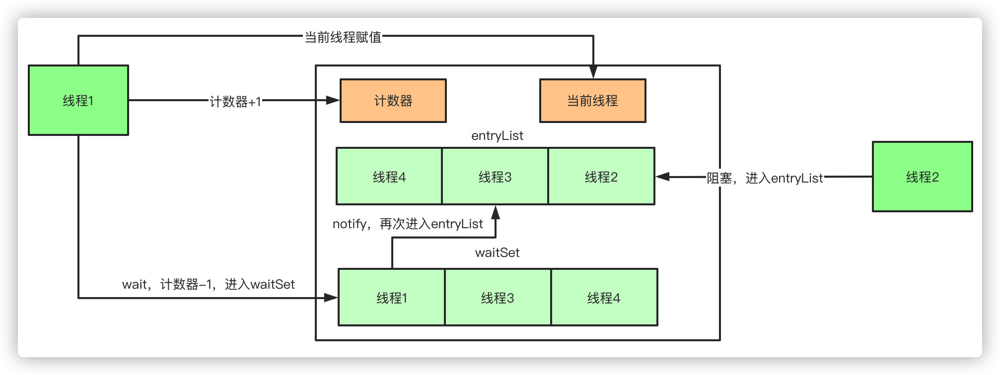

synchronized原理
synchronized是java提供的原子性内置锁，这种内置的并且使用者看不到的锁也被称为监视器锁，使用synchronized之后，会在编译之后在同步的代码块前后加上monitorenter和monitorexit字节码指令，他依赖操作系统底层互斥锁实现。他的作用主要就是实现原子性操作和解决共享变量的内存可见性问题。
执行monitorenter指令时会尝试获取对象锁，如果对象没有被锁定或者已经获得了锁，锁的计数器+1。此时其他竞争锁的线程则会进入等待队列中。
执行monitorexit指令时则会把计数器-1，当计数器值为0时，则锁释放，处于等待队列中的线程再继续竞争锁。
synchronized是排它锁，当一个线程获得锁之后，其他线程必须等待该线程释放锁后才能获得锁，而且由于Java中的线程和操作系统原生线程是一一对应的，线程被阻塞或者唤醒时时会从用户态切换到内核态，这种转换非常消耗性能。
从内存语义来说，加锁的过程会清除工作内存中的共享变量，再从主内存读取，而释放锁的过程则是将工作内存中的共享变量写回主内存。
实际上大部分时候我认为说到monitorenter就行了，但是为了更清楚的描述，还是再具体一点。
如果再深入到源码来说，synchronized实际上有两个队列waitSet和entryList。
- 当多个线程进入同步代码块时，首先进入entryList
- 有一个线程获取到monitor锁后，就赋值给当前线程，并且计数器+1
- 如果线程调用wait方法，将释放锁，当前线程置为null，计数器-1，同时进入waitSet等待被唤醒，调用notify或者notifyAll之后又会进入entryList竞争锁
- 如果线程执行完毕，同样释放锁，计数器-1，当前线程置为null

synchronized的实现底层原理
这个问题也是面试比较高频的一个问题，也是比较难理解的，理解
synchronized需要一定的Java虚拟机的知识。
在jdk1.6之前，synchronized被称为重量级锁，在jdk1.6中，为了减少获得锁和释放锁带来的性能开销，引入了偏向锁和轻量级锁。下面先介绍jdk1.6之前的synchronized原理。
1. 对象头
在HotSpot虚拟机中，Java对象在内存中的布局大致可以分为三部分：对象头、实例数据和填充对齐。因为synchronized用的锁是存在对象头里的，这里我们需要重点了解对象头。如果对象头是数组类型，则对象头由Mark Word、Class MetadataAddress和Array length组成，如果对象头非数组类型，对象头则由Mark Word和Class MetadataAddress组成。在32位虚拟机中，数组类型的Java对象头的组成如下表：
这里我们需要重点掌握的是Mark Word。
1.1 Mark Word
在运行期间，Mark Word中存储的数据会随着锁标志位的变化而变化，在32位虚拟机中，不同状态下的组成如下：
- 32位虚拟机中
- 64位虚拟机中
其中线程ID表示持有偏向锁线程的ID，Epoch表示偏向锁的时间戳，偏向锁和轻量级锁是在jdk1.6中引入的。
2. 重量级锁的底部实现原理：Monitor
在jdk1.6之前，synchronized只能实现重量级锁，Java虚拟机是基于Monitor对象来实现重量级锁的，所以首先来了解下Monitor，在Hotspot虚拟机中，Monitor是由ObjectMonitor实现的，其源码是用C++语言编写的。找到ObjectMonitor.hpp文件，看下其数据结构
ObjectMonitor() {
_header = NULL;
_count = 0; //锁的计数器，获取锁时count数值加1，释放锁时count值减1，直到
_waiters = 0, //等待线程数
_recursions = 0; //锁的重入次数
_object = NULL;
_owner = NULL; //指向持有ObjectMonitor对象的线程地址
_WaitSet = NULL; //处于wait状态的线程，会被加入到_WaitSet
_WaitSetLock = 0 ;
_Responsible = NULL ;
_succ = NULL ;
_cxq = NULL ; //阻塞在EntryList上的单向线程列表
FreeNext = NULL ;
_EntryList = NULL ; //处于等待锁block状态的线程，会被加入到该列表
_SpinFreq = 0 ;
_SpinClock = 0 ;
OwnerIsThread = 0 ;
}
其中 _owner、_WaitSet和_EntryList 字段比较重要，它们之间的转换关系如下图
entryList(锁池)owner(持锁者)waitSet(等待集合)
从上图可以总结获取Monitor和释放Monitor的流程如下：
- 当多个线程同时访问同步代码块时，首先会进入到EntryList中，然后通过CAS的方式尝试将Monitor中的owner字段设置为当前线程，同时count加1，若发现之前的owner的值就是指向当前线程的，recursions也需要加1。如果CAS尝试获取锁失败，则进入到EntryList中。
- 当获取锁的线程调用
wait()方法，则会将owner设置为null，同时count减1，recursions减1，当前线程加入到WaitSet中，等待被唤醒。 - 当前线程执行完同步代码块时，则会释放锁，count减1，recursions减1。当recursions的值为0时，说明线程已经释放了锁。
这就是为什么
wait()、notify()等方法要在同步方法或同步代码块中来执行呢，这里就能找到原因，是因为wait()、notify()方法需要借助ObjectMonitor对象内部方法来完成。
2.1 synchronized作用于同步代码块的实现原理
前面已经了解Monitor的实现细节，而Java虚拟机则是通过进入和退出Monitor对象来实现方法同步和代码块同步的。这里为了更方便看程序字节码执行指令，我先在IDEA中安装了一个jclasslib Bytecode viewer插件。我们先来看这个synchronized作用于同步代码块的代码。
public void run() {
//其他操作.......
synchronized (this){ //this表示当前对象实例，这里还可以使用syncTest.class，表示class对象锁
for (int j = 0; j < 10000; j++) {
i++;
}
}
}
查看代码字节码指令如下：
1 dup
2 astore_1
3 monitorenter //进入同步代码块的指令
4 iconst_0
5 istore_2
6 iload_2
7 sipush 10000
10 if_icmpge 27 (+17)
13 getstatic #2 <com/company/syncTest.i>
16 iconst_1
17 iadd
18 putstatic #2 <com/company/syncTest.i>
21 iinc 2 by 1
24 goto 6 (-18)
27 aload_1
28 monitorexit //结束同步代码块的指令
29 goto 37 (+8)
32 astore_3
33 aload_1
34 monitorexit //遇到异常时执行的指令
35 aload_3
36 athrow
37 return
从上述字节码中可以看到同步代码块的实现是由monitorenter 和monitorexit指令完成的，其中monitorenter指令所在的位置是同步代码块开始的位置，第一个monitorexit指令是用于正常结束同步代码块的指令，第二个monitorexit指令是用于异常结束时所执行的释放Monitor指令。
2.2 synchronized作用于同步方法原理
private synchronized void add() {
i++;
}
查看字节码如下：
0 getstatic #2 <com/company/syncTest.i>
3 iconst_1
4 iadd
5 putstatic #2 <com/company/syncTest.i>
8 return
发现这个没有monitorenter 和 monitorexit 这两个指令了，而在查看该方法的class文件的结构信息时发现了Access flags后边的synchronized标识，该标识表明了该方法是一个同步方法。Java虚拟机通过该标识可以来辨别一个方法是否为同步方法，如果有该标识，线程将持有Monitor，在执行方法，最后释放Monitor。
原理大概就是这样，最后总结一下，面试中应该简洁地如何回答synchroized的底层原理这个问题。
答：Java虚拟机是通过进入和退出Monitor对象来实现代码块同步和方法同步的，代码块同步使用的是monitorenter和 monitorexit 指令实现的，而方法同步是通过Access flags后面的标识来确定该方法是否为同步方法。
3. Jdk1.6为什么要对synchronized进行优化？
因为Java虚拟机是通过进入和退出Monitor对象来实现代码块同步和方法同步的，而Monitor是依靠底层操作系统的Mutex Lock来实现的，操作系统实现线程之间的切换需要从用户态转换到内核态，这个切换成本比较高，对性能影响较大。
mutex lock的作用及访问规则：
mutex lock互斥锁主要用于实现内核中的互斥访问功能。mutex lock内核互斥锁是在原子 API 之上实现的，但这对于内核用户是不可见的。对它的访问必须遵循一些规则：同一时间只能有一个任务持有互斥锁，而且只有这个任务可以对互斥锁进行解锁。互斥锁不能进行递归锁定或解锁。一个互斥锁对象必须通过其API初始化，而不能使用memset或复制初始化。一个任务在持有互斥锁的时候是不能结束的。互斥锁所使用的内存区域是不能被释放的。使用中的互斥锁是不能被重新初始化的。
4. 锁的升级
在JDK1.6中，为了减少获得锁和释放锁带来的性能消耗，引入了偏向锁和轻量级锁，锁的状态变成了四种，如下图所示。锁的状态会随着竞争激烈逐渐升级，但通常情况下，锁的状态只能升级不能降级。这种只能升级不能降级的策略是为了提高获得锁和释放锁的效率。但是在一定情况下也会发生锁的降级，锁的降级只会发生轻量级锁到无锁，或重量级锁到无锁，不会降级到偏向锁，因为在竞争状态下偏向锁比轻量级锁更消耗性能。
4.1 偏向锁
常见面试题：偏向锁的原理（或偏向锁的获取流程）、偏向锁的好处是什么（获取偏向锁的目的是什么）
引入偏向锁的目的：减少只有一个线程执行同步代码块时的性能消耗，即在没有其他线程竞争的情况下，一个线程获得了锁。
偏向锁的获取流程：
- 检查对象头中Mark Word是否为可偏向状态，如果不是则直接升级为轻量级锁。
- 如果是，判断Mark Work中的线程ID是否指向当前线程，如果是，则执行同步代码块。
- 如果不是，则进行CAS操作竞争锁，如果竞争到锁，则将Mark Work中的线程ID设为当前线程ID，执行同步代码块。
- 如果竞争失败，升级为轻量级锁。
偏向锁的获取流程如下图：
同时底层获取Monitor和释放Monitor过程中会发生锁的计数器变化以及获取过锁的会发生重入次数的变化，如下图
偏向锁在JDK1.6是默认开启的，通过参数进行关闭
xx:-UseBiasedLocking=false。偏向锁可以提高带有同步但无竞争的程序性能，但如果大多数的锁都总是被多个不同的线程访问，那偏向锁就是多余的。
偏向锁的撤销：
只有等到竞争，持有偏向锁的线程才会撤销偏向锁。偏向锁撤销后会恢复到无锁或者轻量级锁的状态。
- 偏向锁的撤销需要到达全局安全点，全局安全点表示一种状态，该状态下所有线程都处于暂停状态。
- 判断锁对象是否处于无锁状态，即获得偏向锁的线程如果已经退出了临界区，表示同步代码已经执行完了。重新竞争锁的线程会进行CAS操作替代原来线程的ThreadID。
- 如果获得偏向锁的线程还处于临界区之内，表示同步代码还未执行完，将获得偏向锁的线程升级为轻量级锁。
一句话简单总结偏向锁原理：使用CAS操作将当前线程的ID记录到对象的Mark Word中。
4.2 轻量级锁
引入轻量级锁的目的：在多线程交替执行同步代码块时（未发生竞争），避免使用互斥量（重量锁）带来的性能消耗。但多个线程同时进入临界区（发生竞争）则会使得轻量级锁膨胀为重量级锁。
轻量级锁流程：
- 在代码即将进入同步块的时候，如果此同步对象没有被锁定（是否无锁），虚拟机首先将当前线程的
栈帧中建立一个名为锁记录（Lock Record）的空间，用于存储锁对象目前的Mark Word的拷贝。如果所示
- 将对象的Mark Word复制到栈帧中的Lock Record中，并将Lock Record中的owner指向当前对象，并使用CAS操作将对象的Mark Word更新为指向Lock Record的指针，如果这个更新动作成功了，说明线程获取锁成功，将对象Mark Word中锁的标示位（锁类型）设置为 “00” ，并执行后面的同步代码块。如图所示。
- 如果这个更新动作失败了，需要首先判断
当前对象的Mark Word是否指向当前线程栈帧的Lock Record，如果是则表示当前线程已经持有了当前对象的锁，这就是一次重入，直接可以），接着会进行自旋的尝试（也就是接着重复第二步的操作去尝试获得锁），自旋超过了设定的次数后，那轻量级锁不在有效，必须膨胀为重量级锁。此时被锁住的对象的标志变为重量级锁的标志。
轻量级锁的解锁
轻量级的解锁同样是通过CAS操作进行的，线程会通过CAS操作将Lock Record中的Mark Word（官方称为Displaced Mark Word）替换回来。如果成功表示没有竞争发生，成功释放锁，恢复到无锁的状态；如果失败，表示当前锁存在竞争，升级为重量级锁。
一句话总结轻量级锁的原理：将对象的Mark Word复制到当前线程的Lock Record中，并将对象的Mark Word更新为指向Lock Record的指针。
4.3 自旋锁
引入自旋锁的原因：因为阻塞和唤起线程都会引起操作系统用户态和核心态的转变，对系统性能影响较大，而自旋等待可以避免线程切换的开销。
什么是自旋锁
当轻量级锁获取失败后，就会升级为重量级锁，但是重量级锁之前也介绍了是很耗资源的，JVM开发团队注意到许多程序上，共享数据的二锁定状态只会持续很短一段时间，为了这段时间去挂起和恢复线程并不值得。 所以想到了一个策略，那就是当线程请求一个已经被锁住的对象时，可以让未获取锁的线程“稍等一会”，但不放弃处理器执行时间，只需要让线程执行一个忙循环（自旋），这就是所谓的自旋锁。 如图所示：
自旋锁的设置
自旋锁在JDK1.4.2中引入，默认关闭，可以通过-XX:UserSpinning参数来开启，默认自旋次数是10次，用户可以自定义次数，配置参数是-XX:PreBockSpin。
自适应自旋锁
JDK1.6引入了自适应自旋锁，自适应自旋锁的自旋次数不在固定，而是由上一次在同一个锁上的自旋时间及锁的拥有者的状态来决定的。如果对于某个锁对象，刚刚有线程自旋等待成功获取到锁，那么虚拟机将认为这次自旋等待的成功率也很高，会允许线程自旋等待的时间更长一些。如果对于某个锁对象，线程自旋等待很少成功获取到锁，那么虚拟机将会减少线程自旋等待的时间。
自旋锁的优缺点
- 优点：可以避免线程切换的开销，提升系统性能
- 缺点：它也会占用处理器的时间。如果持有锁的线程在较短的时间内释放了锁，自旋锁的效果就比较好，如果持有锁的线程很长时间都不释放锁，自旋的线程就会白白浪费资源，因此自旋次数会做出设置
5. 偏向锁、轻量级锁、重量级锁的对比
| 锁 | 优点 | 缺点 | 实用场景 |
|---|---|---|---|
| 偏向锁 | 加锁和解锁不需要额外的消耗，和执行非同步方法相比仅存在纳秒级差距 | 如果线程存在竞争，会额外带来锁撤销的消耗 | 适用于只有一个线程访问同步块场景 |
| 轻量级锁 | 竞争的线程不会阻塞，提高了程序的相应速度 | 如果始终得不到锁竞争的线程，使用自旋会消耗CPU | 追求响应时间，同步执行速度非常快 |
| 重量级锁 | 线程竞争不适用自旋，不会消耗CPU | 线程阻塞，相应时间缓慢 | 追求吞吐量，同步执行速度较慢 |
6. 锁消除
锁消除是指Java虚拟机在即时编译时，通过对运行上下的扫描，消除那些不可能存在共享资源竞争的锁。锁消除可以节约无意义的请求锁时间。
锁消除的主要判定依据来源于逃逸分析的数据支持，如果判断在一段代码中，堆上的所有数据都不会逃逸出去从而被其他线程访问到，那就可以把它们当做栈上数据对待，认为它们是线程私有的，同步加锁自然就无须进行。变量是否逃逸，对于虚拟机来说需要使用数据流分析来确定，但是程序员自己应该是很清楚的，怎么会在明知道不存在数据争用的情况下要求同步呢?实际上有许多同步措施并不是程序员自己加入的，同步的代码在Java程序中的普遍程度也许超过了大部分读者的想象。下面这段非常简单的代码仅仅是输出两次字符串相加的结果，无论是源码字面上还是程序语义上都没有同步。
public class Append extends Thread{
public static void main(String[] args) {
appendHello("hello", "world",)
}
public static String appendHello(String s1, String s2) {
return new StringBuffer().append(s1).append(s2).toString();
}
}
StringBuffer的append ( )是一个同步方法，锁就是this也就是(new StringBuilder())。虚拟机发现它的动态作用域被限制在cappendHello( )方法内部。也就是说, new StringBuilder()对象的引用永远不会“逃逸”到appendHello ( )方法之外，其他线程无法访问到它，因此，虽然这里有锁，但是可以被安全地消除掉，在即时编译之后，这段代码就会忽略掉所有的同步而直接执行了。
append方法是同步的，进行了两次的字符串的拼接，方法的调用者是StringBuffer对象，它是一个局部变量没有逃逸出这个方法内部，即使是多个线程来执行对象也没有逃逸出这个方法，此时append方法的锁就可以消除掉。
7. 锁粗化
一般情况下，为了提高性能，总是将同步块的作用范围限制到最小，这样可以使得需要同步的操作尽可能地少。但如果一系列连续的操作一直对某个对象反复加锁和解锁，频繁地进行互斥同步操作也会引起不必要的性能消耗。
如果虚拟机检测到有一系列操作都是对某个对象反复加锁和解锁，会将加锁同步的范围粗化到整个操作序列的外部。如下：
for (int i=0;i<10;i++) {
synchronized(lock) {
System.out.print('i:' i++);
}
}
这段代码会导致频繁地加锁和解锁，锁粗化后
synchronized(lock) {
for (int i=0;i<10;i++) {
System.out.print('i:' i++);
}
}
将同步代码块的范围放大，放到for循环的外面，这样只需要加一次锁即可。
8. 对synchronized的优化
（1）减少synchronized的范围
同步代码块中尽量短，减少同步代码块中代码的执行时间，减少锁的竞争。单位时间内执行的线程就会变多，等待的线程变少。
（2）降低 synchronized锁的粒度
将一个锁拆分为多个锁提高并发度，尽量不要用类名点class来创建锁。
（3）HashTable中的锁
put、remove、get方法都使用了synchronized关键字，也就说在对哈希表进行插入数据的时候就不能获取或移除数据。
（4）读写分离
读取时不加锁，写入和删除时加锁
9. synchronized和volatile的区别？
volatile主要是保证内存的可见性，即变量在寄存器中的内存是不确定的，需要从主存中读取。synchronized主要是解决多个线程访问资源的同步性。volatile作用于变量，synchronized作用于代码块或者方法。volatile仅可以保证数据的可见性，不能保证数据的原子性。synchronized可以保证数据的可见性和原子性。volatile不会造成线程的阻塞，synchronized会造成线程的阻塞。
10. synchronized和Lock的区别？
- Lock是显示锁，需要手动开启和关闭。synchronized是隐士锁，可以自动释放锁。
- Lock是一个接口，是JDK实现的。synchronized是一个关键字，是依赖JVM实现的。
- Lock是可中断锁，synchronized是不可中断锁，需要线程执行完才能释放锁。
- 发生异常时，Lock不会主动释放占有的锁，必须通过unlock进行手动释放，因此可能引发死锁。synchronized在发生异常时会自动释放占有的锁，不会出现死锁的情况。
- Lock可以判断锁的状态，synchronized不可以判断锁的状态。
- Lock实现锁的类型是可重入锁、公平锁。synchronized实现锁的类型是可重入锁，非公平锁。
- Lock适用于大量同步代码块的场景，synchronized适用于少量同步代码块的场景。